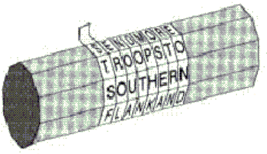
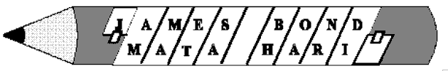

Skytale von Sparta (500 v. Chr.) (lt. Plutarch)
Dazu brauchen Sender und Empfänger zwei Zylinder (Kantholzstäbe) mit genau demselben Radius und jeweils gleich vielen Kanten.
Der Sender wickelt ein schmales Band aus Pergament spiralförmig um seinen Zylinder und schreibt dann der Länge nach seine Nachricht auf das Band. Die Nachricht auf dem abgewickelten Band kann nur von einer Person gelesen werden, die ebenfalls einen solchen Zylinder besitzt.

Wie kann man dieses Verfahren in CrypTool abbilden ?
Die Skytale entspricht der identischen Permutation (1,2,3, ..., n) über n Spalten, wobei n die Anzahl der Kanten der Skytale ist.
Beispiel:
Für n=3, also genau 3 Außenkanten, schreibt man auf das Band:
JAM ESB OND
und erhält auf dem abgewickelten Band:
JEO ASN MBD.

Wenn man die Nachricht
JAM ESB OND WAN TED DEADOR ALI VE
auf den Zylinder wickelt, erhält man:
JEO WTD DAV ASN AEE OLEMBD NDA RI